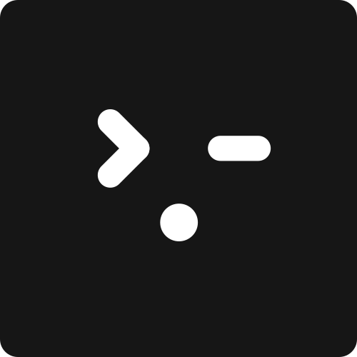
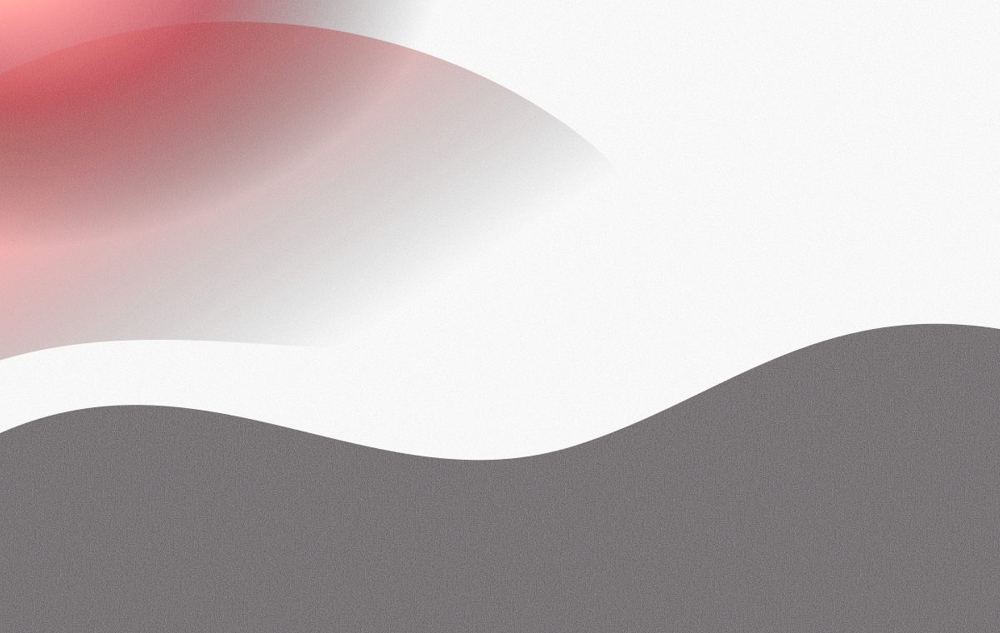
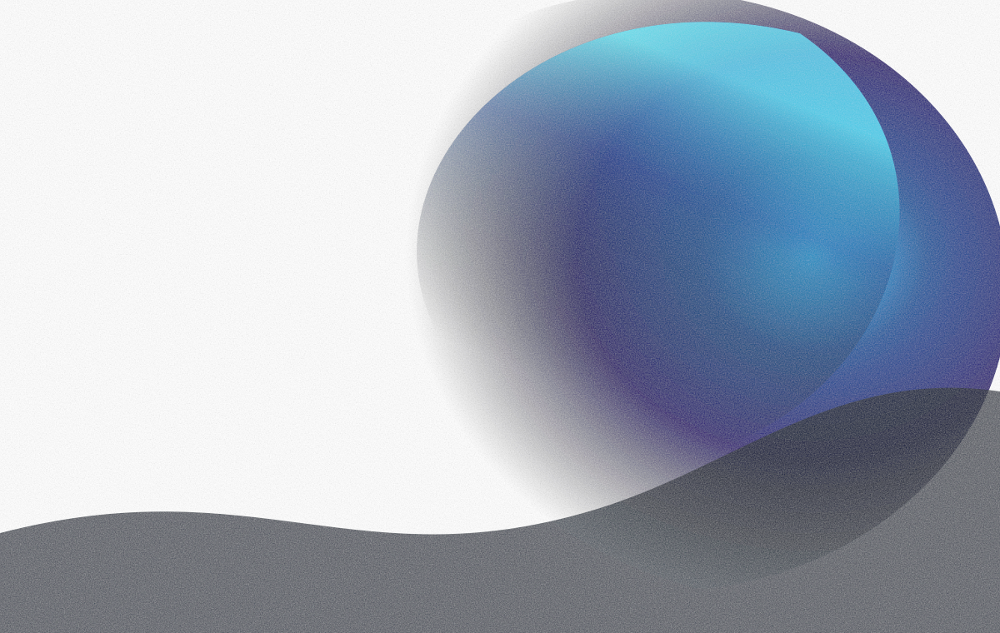
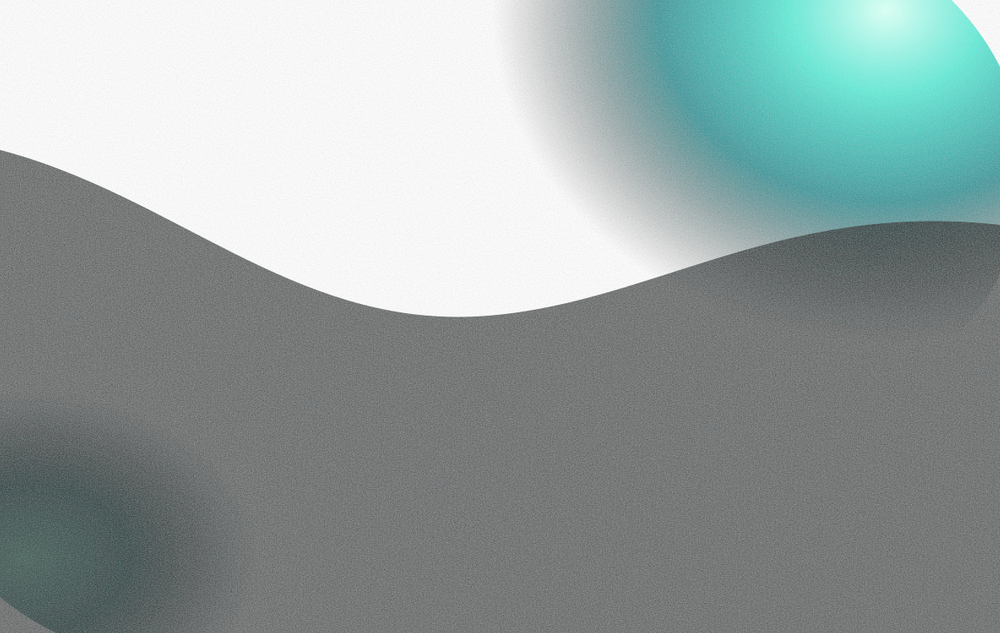
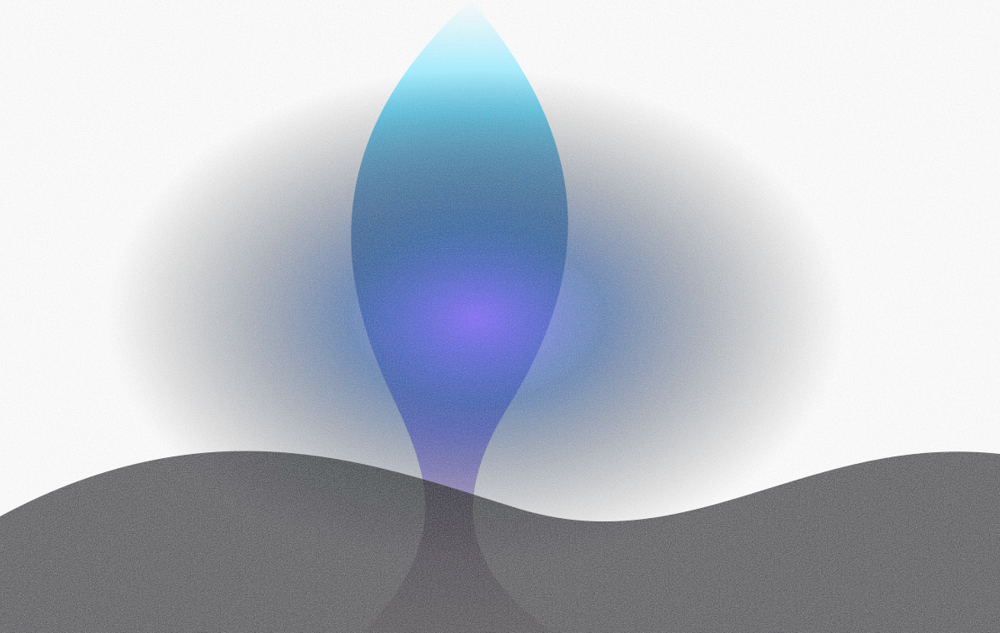

CodePawl Evidence Console
A technical SaaS workspace that moves users from uncertainty to an engineering decision: what happened, what evidence exists, and what to do next.
Evidence First
Every verdict links back to checks, logs, files, policy, or session events.
Action Oriented
Users always see the next command, review action, or memory decision.
Local First
Sync state, daemon state, and data location remain visible across screens.
SaaS Ready
Includes onboarding, settings, integrations, exports, filters, and responsive report review.
Landing Page Mockup Reference
State-of-Sites-inspired product landing adapted for CodePawl: dark editorial hierarchy, account entry points, local-first positioning, workflow proof, and SaaS-compatible calls to action.
AI agents move fast. CodePawl turns their sessions into evidence, verdicts, memory, and the next engineering decision. Local analysis works without an account; CloudPawl accounts add workspace sync and team workflows.
Explore product +What CodePawl gives you

Evidence status shows whether an agent run has enough proof to accept, rerun, or review.

Next action turns messy session output into a concrete command, prompt, or review decision.

Project memory saves recurring lessons so future sessions start with sharper context.
Connect the places AI coding work already happens.
CodePawl is designed for mixed-agent teams: local CLI analysis, editor-driven runs, Codex and Claude Code sessions, and CI reports. Start local, then sign in when you want workspace sync and team visibility.
View use cases +Built for AI coding workflows
Turn agent output into a local system of record.
Reports begin with the verdict, evidence, risk, and next decision.
Capture the session
Collect changed files, commands, logs, prompts, and session status.
Verify the evidence
Compare agent claims with deterministic checks and cited artifacts.
Diagnose drift
Find work that moved outside the request or lacks validation proof.

Remember the lesson
Save repo-specific memory so the next agent run starts sharper.
Evidence Console App Shell
Global shell keeps orientation stable while page content handles decisions: verdict, evidence, risk, and next action.
Every page starts with the decision state, keeps supporting evidence nearby, and exposes one primary action before secondary review tools.
Onboarding And Empty State
First-run state teaches the product instead of showing a blank dashboard. Repeated cards align titles, copy, and CTA rows.
Add project folder
Choose repositories to watch, analyze, and report on.
Enable integrations
Connect Codex, Claude Code, and terminal session sources.
Analyze current repo
Create the first traceable session report from local evidence.
Open sample report
Preview verdicts, evidence, risks, next actions, and memory.
Analyze your first agent session
CodePawl will inspect changed files, validation evidence, risks, follow-up prompts, and memory candidates.
Overview Dashboard
UI files changed without Playwright or screenshot evidence. The console keeps the reason, proof gap, and command in one decision path.
UI sessions need e2e evidence.
Passed required evidence checks.
Missing typecheck, e2e, or screenshot proof.
Scope drift or protected paths detected.
| Session | Agent | Verdict | Next action |
|---|---|---|---|
| web redesign | Codex | Needs evidence | Run Playwright |
| api refactor | Claude Code | Verified | Mark accepted |
| docs update | Cursor | Draft | Review report |
| settings cleanup | Codex | Risky | Inspect protected path |
Sessions
| Session | Project | Agent | Verdict | Next action |
|---|---|---|---|---|
| web redesign | codepawl/web | Codex | Needs evidence | Run Playwright |
| api refactor | codepawl/api | Claude Code | Verified | Mark accepted |
| settings cleanup | client-app | Codex | Risky | Inspect protected path |
| docs refresh | docs | Cursor | Draft | Review report |
Codex - web redesign
32 files changed on branch ui-redesign. Missing e2e evidence and one backend path is suspicious.
Needs Attention Queue
UI files changed without e2e proof.
Playwright or screenshot proof required.
pnpm exec playwright test
Protected auth path touched.
Review before accepting.
Inspect protected diff.
Lockfile changed during parser work.
Dependency delta needs review.
Review package changes.
Draft report missing final verdict.
Needs accept/archive decision.
Mark accepted or archive.
Session Detail
Main issue: UI files changed without e2e or screenshot proof. Next action: run Playwright before marking this session accepted.
Run e2e validation and attach the result before accepting this session.
| Check | Status | Evidence |
|---|---|---|
| test | Passed | pnpm test log |
| typecheck | Missing | no matching log |
| build | Missing | no matching log |
| e2e | Required | apps/web/** changed |
The run likely drifted after backend files were changed during a UI-only task.
Evidence: billing route changed, task scope was web UI, and no e2e evidence was found.
For codepawl/web UI tasks, require Playwright or screenshot proof.
Reports
| Report | Verdict | Evidence | Formats |
|---|---|---|---|
| Codex web redesign | Needs evidence | 1/4 checks | MD, JSON |
| Claude api refactor | Verified | 4/4 checks | MD, JSON |
| Cursor docs update | Draft | 0/2 checks | MD |
| Codex settings cleanup | Risky | 2/4 checks | MD, JSON |
Verdict: Needs evidence
Reason: UI changes detected without e2e or screenshot proof.
Verdict: Needs evidence
Next action: Run Playwright before accepting.
Projects
codepawl/web
UI project with e2e requirement and protected backend paths.
| test | Required |
| typecheck | Required |
| build | Required |
| e2e for UI | Conditional |
apps/api/auth/**
schema/**
database/**
Agents
Accepted sessions. Best for implementation and UI iteration.
Accepted sessions. Best for refactors and lower unrelated file touches.
Accepted sessions. Best for docs and small review tasks.
| Agent | Sessions | Accepted | Risky | Missing evidence | Best task | Weak task |
|---|---|---|---|---|---|---|
| Codex | 14 | 82% | 4 | 29% | UI iteration | Broad prompts |
| Claude Code | 8 | 88% | 1 | 13% | Refactors | Fast prototypes |
| Cursor | 6 | 71% | 1 | 34% | Docs | Validation-heavy work |
Memory
UI tasks require e2e
For codepawl/web UI tasks, require Playwright or screenshot proof before accepting a session.
source: session #128
confidence: high
last used: today
Integrations
| Confirm Claude Code path | Needs review | Select session directory before indexing. |
| Configure GitHub publishing | Optional | Enable when PR comments are needed. |
| Verify local artifact folder | Done | ~/.codepawl is writable. |
Settings
| Required checks | test, typecheck, build |
| UI changes | Require e2e or screenshot proof |
| Missing evidence | Verdict becomes Needs Evidence |
| False validation claim | Flag as risk |
| Data location | ~/.codepawl |
| Sync mode | Local-only by default |
| Report formats | Markdown, JSON |
| Daemon | Enabled |
billing/**
schema/**
database/**
Source code is not uploaded by default. Reports are generated from local session evidence and saved locally unless explicit sync is enabled.
Platform Assets And Design System
A separate reference surface for platform assets, role-based tokens, component previews, data visualization, and accessibility checks.
Organized like a design-system documentation page: foundations first, then assets, tokens, reusable components, chart rules, and export checks.
Brand assets
Color tokens
Components
Contrast target
Use role names in UI specs instead of raw color names. A button uses --primary, attention accents use --brand-coral, evidence graphs use --evidence, and failure states use --risk.
Assets are previewed on neutral canvases so dimensions, contrast, and background behavior are visible.
Use for documentation covers, release notes, and first-run brand moments. Keep it out of dense metric cards and operational dashboards.
Use the logo in top navigation, docs headers, login, and exported report covers.
Use banner artwork as repeated card decoration or behind small interface text.
Palette previews show token name, hex value, role, and usage so the SaaS interface stays technical and operational.
Compact local typography and stable spacing keep the product suitable for repeated SaaS workflows.
Lato keeps dashboard copy clear and readable inside report panels, tables, queues, and settings screens.
Reusable primitives are shown in live-looking states instead of static labels.
Copyable commands use dark code surfaces to separate action from prose.
Charts keep labels and values aligned at the top so funnel and bin data remains scannable.
The design kit documents contrast, focus, non-color status labels, and export readiness.
| Assets | 3 files |
| Tokens | Role names |
| Components | Previewed |
| Source | Standalone HTML |